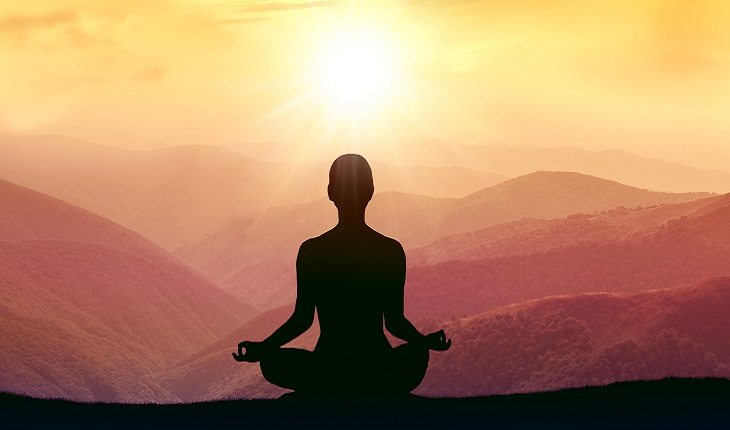

Nulla vitae elit libero, a pharetra augue mollis interdum.


Conheça a técnica de mindfulness, um tipo de meditação que direciona seu foco para o presente e combate estresse, ansiedade e muito mais!
No dia a dia acelerado em que vivemos, sensações como a ansiedade e o estresse se proliferam numa velocidade absurda, dispersando nosso foco. Quem nunca se viu tomando café da manhã já com a cabeça a mil nas atribuições do dia? Ou então teve um dia daqueles no trabalho e ficou nervoso demais? Assim, se você nunca ouviu falar no conceito de mindfulness, talvez esse seja o momento.
“Mindfulness tem suas origens em antigas práticas de meditação e é uma maneira de prestar atenção ao que está acontecendo em nossa vida aqui e agora. Isso não vai eliminar as pressões, mas ajuda a responder a elas de maneira mais efetiva, beneficiando coração, cabeça e corpo”, resume Martin Portner, neurologista e mestre em neurociências.
“Mindfulness nos ajuda a reconhecer e afastar reações emocionais e fisiológicas automáticas, inconscientes. A prática de estar no momento presente oferece um salto gigantesco na qualidade da vida”, destaca o especialista. A psicóloga e instrutora de mindfulness Daniela Sopezki comenta o quanto essa prática é importante para desligarmos nosso cérebro do “piloto automático”, vivendo mais os momentos e captando as intenções por trás de nossas ações.
“A meditação mindfulness está relacionada à melhoria da saúde mental em uma variedade de doenças, incluindo a ansiedade, a depressão, o estresse, os distúrbios alimentares, o abuso de substâncias e a redução dos sintomas de dor crônica“, enumera a profissional.
Com a ajuda dos especialistas, selecionamos três exercícios de mindfulness para aplicar essa técnica em seu dia a dia. Confira!
O mestre em bhakti ioga e life coach Giridhari Das relata que “um exercício é direcionar sua atenção para uma sensação qualquer”, veja exemplos:
De acordo com Giridhari, o exercício de mindfulness mais poderoso é concentrar-se na sua ação, estando totalmente presente em tudo o que faz, enfim, viver no presente. “Está tomando banho? Então fique todo presente tomando banho. Está comendo? Pois fique completamente presente no ato de comer, da sensação do garfo e faca na mão, dos aromas e cores de sua comida, da textura na boca, da sensação de saciez, etc. Coloque sua presença e sua atenção no seus atos”, finaliza.
Este artigo está disponível Aqui.